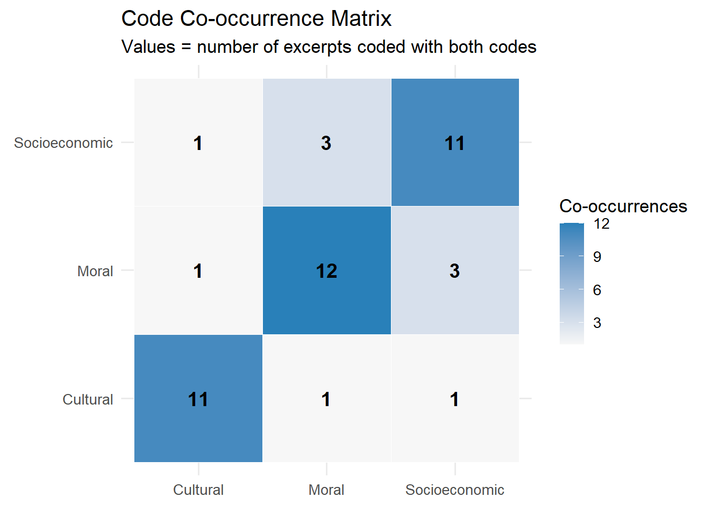
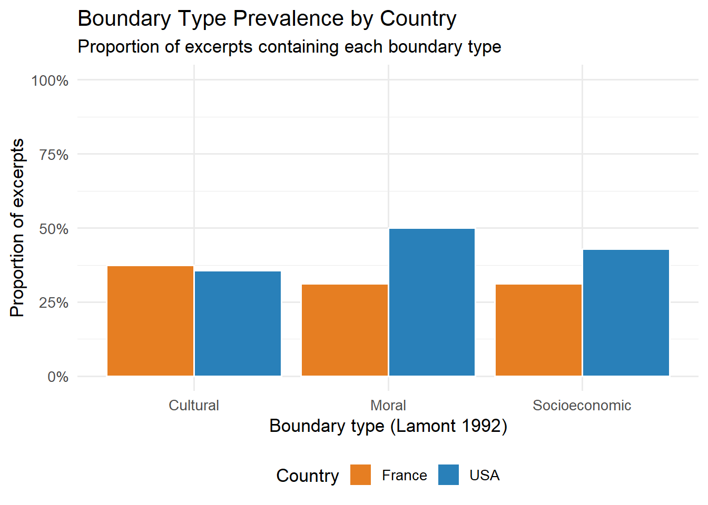
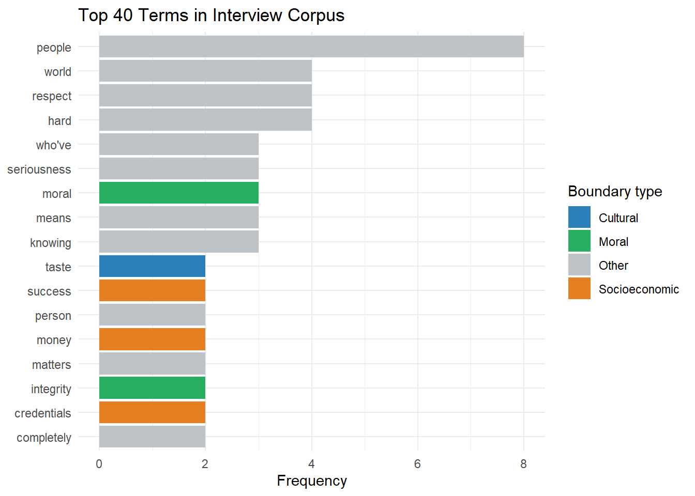

Week 1 Qualitative Methods in Cultural and Cognitive Sociology
Weeks 11–12 | Theory + Lab 6: NVivo-Style Coding in R
1.1 6.1 The Qualitative-Quantitative Interface
Qualitative methods in this course are not a fallback. They address different — and in several respects, primary — questions:
- What is the content of a schema? LCA identifies that latent types exist; it cannot tell you what those types consist of experientially or discursively.
- How do actors navigate contradictory logics? Quantitative models can measure outcomes; they cannot trace the micro-process by which actors reconcile competing institutional demands.
- What counts as relevant in a setting? Relevance structures (Zerubavel) are best accessed through sustained observation, not survey.
The dual-process framework creates a specific methodological rationale for combining methods: use qualitative observation to access System 1 (dispositional) cultural patterns operating in practice; use interviews carefully, knowing they primarily access System 2 (justificatory) content.
1.2 6.2 In-Depth Interviews: Epistemological Constraints
Interviews are one access point to cultural cognition, not a direct window onto it. The constraints:
Confabulation (Nisbett & Wilson, 1977): People provide explanations for their behavior that are plausible reconstructions, not accurate reports of the actual cognitive processes. This is not dishonesty — the actual process is often inaccessible to conscious introspection.
Schütz’s motive distinction: “Because-motives” (retrospective causal stories: “I did X because Y happened”) differ from “in-order-to motives” (prospective intentional states: “I did X in order to achieve Z”). Both are accessible in interviews; neither is necessarily accurate as a report of what drove the action.
Social desirability and audience effects: Interviewees construct responses appropriate to the interview context. Gender, race, and class of the interviewer systematically affect response content (Krysan & Couper, 2003).
The interview as System 2 data. Given dual-process theory, interviews should be treated primarily as data about discursive culture — explicit, propositional justifications — rather than about dispositional schemas. This does not make interview data valueless; it clarifies what inferences can and cannot be drawn from them.
The appropriate question when analyzing interview data is: “What justificatory repertoire is this person drawing on?” not “What is the real reason they do this?”
Methodological responses:
Vignette interviews: present a hypothetical scenario; ask for evaluation. Reduces retrospective rationalization by anchoring the response to a concrete case.
Think-aloud protocols: ask respondents to verbalize as they make a decision in real time. Accesses quasi-immediate processing more than retrospective interviews.
Cognitive interviewing: “Why did you answer that way? What came to mind when you read that question?” Probes the interpretive work behind survey responses.
1.3 6.3 Ethnography: Accessing Practice
Ethnographic observation is the method most consistent with the theoretical claim that cultural knowledge is embodied, pre-reflective, and carried in practice rather than discourse.
What ethnography provides that interviews cannot:
- Observation of behavior without the mediation of verbal report
- Access to tacit, routine practice (the taken-for-granted)
- Detection of discrepancies between stated values and observed behavior
- The interactional context in which schemas are activated and negotiated
Wacquant (2004), Body and Soul
Wacquant’s immersive ethnography of a South Side Chicago boxing gym is the methodological extreme: full participant observation over three years, culminating in his own boxing career. The argument is that the “pugilistic habitus” — the embodied logic of boxing — cannot be grasped from the outside, through interview or survey. It must be acquired through practice.
This is a strong epistemological claim. Its implication for research design: some cultural phenomena require insider access, and that access is not just methodologically but epistemologically irreducible to observation from the outside.
Objection: Wacquant’s account is compelling but not straightforwardly generalizable. The validity of a single ethnographer’s account depends on the ethnographer’s reflexivity, positionality, and theoretical framework. It is evidence about the gym Wacquant studied, not necessarily about boxing culture in general.
Practical ethnographic fieldwork protocols:
Field notes should separate: - Descriptive notes: what happened, who said what, in what sequence. Written as close to contemporaneously as possible. - Analytic notes: theoretical interpretation of what happened. Written after the fact, explicitly marked as analysis. - Methodological notes: observations about the fieldwork process itself — access problems, your own reactions, researcher effects.
The analytic memo is the primary tool for moving from description to theory. Write a memo when a pattern appears for the second or third time. Memos become the raw material for the theoretical argument.
1.4 6.4 Discourse Analysis
Three traditions, distinguished by their objects and epistemologies:
Foucauldian discourse analysis: Discourses are not just ways of speaking but regimes of truth that produce the objects they speak about. Analysis traces how statements become authorized, what subjects they produce, and what counts as knowledge in a domain. Genealogical method: trace discontinuities and ruptures rather than linear development.
Critical Discourse Analysis (CDA): Text as social practice. Fairclough (1992) analyzes texts at three levels simultaneously: textual (linguistic features), discursive practice (how texts are produced and consumed), and social practice (what social structures the text reproduces or resists).
Narrative analysis: Somers (1994) — actors navigate the world through narratives. Ontological narratives (personal identity stories), public narratives (cultural resources, e.g., “rags to riches”), and meta-narratives (master frames, e.g., progress, decline). Analysis asks: which narratives are available? Which are activated? With what consequences?
1.5 Lab 6: Systematic Qualitative Analysis in R
We use R for systematic text analysis of interview data — not as a replacement for interpretive reading but as a tool for structural analysis at scale. The workflow covers: loading text data, implementing a coding scheme, computing inter-rater statistics, and visualizing code distributions and co-occurrences.
1.5.1 The corpus: structure and analytical unit
Before writing any code, it is worth being explicit about what we are working with. The analytical unit here is the interview excerpt — a short passage (one to four sentences) in which a respondent articulates something about how they evaluate other people or justify their own position. This is not the same as an entire interview; excerpts have already been selected by the researcher as passages relevant to the phenomenon of interest (boundary-drawing). In real research, this selection is itself a consequential analytical step requiring documentation and justification.
The corpus contains 30 such excerpts drawn from 15 simulated respondents. Each excerpt carries two pieces of metadata: occupation (Lawyer, Professor, Engineer, Physician) and country (USA or France). Metadata serves two purposes: it allows us to test whether boundary-drawing varies by social position or national context, and it provides a check on whether the coding scheme is capturing something substantive rather than just noise. Without metadata, we could describe patterns but could not connect them to any structural conditions — the analysis would remain purely descriptive.
library(tidyverse)
library(tidytext)
library(kableExtra)
library(ggrepel)
library(patchwork)
set.seed(20240106)
# ─────────────────────────────────────────────────────────────
# Simulated interview corpus: 30 interview excerpts
# Topic: How upper-middle-class professionals justify cultural
# consumption choices (Lamont 1992 framework)
#
# Coding scheme based on Lamont's boundary types:
# 1. Moral boundaries (character, integrity, work ethic)
# 2. Cultural boundaries (education, taste, manners)
# 3. Socioeconomic boundaries (income, occupation, material success)
# ─────────────────────────────────────────────────────────────
excerpts <- tibble(
excerpt_id = 1:30,
respondent_id = sample(paste0("R", sprintf("%02d", 1:15)), 30, replace = TRUE),
occupation = sample(c("Lawyer", "Professor", "Engineer", "Physician"),
30, replace = TRUE, prob = c(.3,.3,.2,.2)),
country = sample(c("USA", "France"), 30, replace = TRUE),
text = c(
"I think what matters most is whether someone is honest, whether they have integrity. I don't care much about how much money they have.",
"Education is really the foundation. Not just a degree — reading widely, knowing art and music. That's what distinguishes someone.",
"Hard work is what I respect. People who've built things. Success through discipline.",
"I find it hard to relate to people who haven't traveled, who don't have a certain... curiosity about the world.",
"Money doesn't impress me. I know people who've made fortunes and they're completely uncultured.",
"Moral seriousness — that's what I look for. Does this person take responsibility for their actions?",
"It's about taste really. Not snobbishness, but knowing what is excellent.",
"I grew up without much but I worked hard and got where I am. I respect that path in others.",
"You can tell immediately if someone reads. The vocabulary, the references. It just... shows.",
"I'm proud of what I've achieved financially. But that's not who I am — that's what I've done.",
"Character is everything. Kindness, reliability. These are more important than anything else.",
"Good taste isn't inherited — it can be cultivated. But it requires effort, exposure.",
"Professional success matters. It signals seriousness, competence.",
"I value people who've sacrificed for their beliefs. That takes real moral courage.",
"Cultural refinement is something I take seriously — opera, literature, serious film.",
"I judge people by their behavior, not their bank account. Are they ethical?",
"An educated person is not just someone with credentials. It's a whole way of being in the world.",
"I've worked incredibly hard for everything. I won't apologize for what I've earned.",
"I can't respect someone who's dishonest, regardless of their status.",
"You can always tell by the books someone hasn't read. The gaps reveal more than what's there.",
"What I admire is moral consistency — doing the right thing even when it costs you.",
"Intellectual engagement is the core of who I am. I need to be with people who think.",
"I respect entrepreneurship — creating something from nothing. That's impressive.",
"Integrity over credentials. I've seen brilliant people who were completely unethical.",
"Aesthetic sensibility — an appreciation for beauty — is not trivial. It's a way of attending to the world.",
"My father worked his hands. I have a doctorate. That trajectory means something to me.",
"The most important thing is that your word means something. Everything else is secondary.",
"Being cosmopolitan — knowing the world — that's what I find interesting in people.",
"I've been successful but I try not to define myself by it. It's a means, not an end.",
"Seriousness of purpose — that's the quality I value most in a colleague or friend."
)
)
cat("Corpus: N =", nrow(excerpts), "excerpts from", n_distinct(excerpts$respondent_id), "respondents\n")## Corpus: N = 30 excerpts from 14 respondentsWith the corpus loaded, we now have a tidy data frame where each row is one excerpt, with its text and metadata in separate columns. This structure — one observation per row — is the standard format for text analysis in the tidyverse and tidytext ecosystems. The next step is to apply a coding scheme to each excerpt so that we can measure the prevalence and co-occurrence of different boundary types across the corpus.
1.5.2 Dictionary-based coding: what it is and what it is not
The coding procedure below uses a dictionary-based approach: for each boundary type, we define a list of keywords and then ask, for each excerpt, whether any of those keywords appear in the text. The result is a binary variable (1 = code present, 0 = absent) for each code and each excerpt.
This is not the same as interpretive qualitative coding. In interpretive coding — the kind done in NVivo or Atlas.ti — a trained researcher reads each passage in context, applies a code based on the meaning being expressed, and writes a memo explaining the decision. Dictionary-based coding bypasses this interpretive process entirely: it detects keyword presence, not meaning.
The tradeoff is real. Dictionary coding is systematic and reproducible: anyone running this script on the same data gets the same result. It scales to thousands of documents without additional labor. But it misses context, irony, and implicit meaning. The excerpt “Money doesn’t impress me” contains the word “money” and will be flagged as socioeconomic — but the respondent is explicitly distancing themselves from socioeconomic criteria, which is the opposite of what the code is meant to capture. In a small corpus like this one, such errors can be caught and corrected by hand. In a large corpus, they become systematic noise. A real qualitative researcher using this approach would: (1) read a random sample of flagged excerpts to estimate the false-positive rate, (2) consider negation detection (e.g., flagging “doesn’t impress” as a boundary rejection rather than a boundary assertion), and (3) treat the dictionary output as a first pass, not a final code.
# ─────────────────────────────────────────────────────────────
# Implement coding scheme:
# 1. Dictionary-based pre-coding (keyword presence)
# 2. Manual review + override (simulated here)
# 3. Compute code frequency and co-occurrence
# ─────────────────────────────────────────────────────────────
# Boundary type dictionaries (Lamont 1992 framework)
moral_keywords <- c(
"honest", "integrity", "ethical", "moral", "character",
"responsibility", "sacrifice", "consistent", "reliable",
"word", "right thing", "serious"
)
cultural_keywords <- c(
"education", "cultured", "taste", "art", "music", "books",
"read", "literature", "opera", "aesthetic", "intellectual",
"cosmopolitan", "refinement", "curious", "knowledge",
"traveled", "film"
)
socioec_keywords <- c(
"money", "success", "income", "earned", "work hard",
"achieved", "professional", "career", "credentials",
"entrepreneur", "built", "financially", "doctorate"
)
# Apply dictionaries
code_present <- function(text_vec, keywords) {
pattern <- paste(keywords, collapse = "|")
as.integer(str_detect(tolower(text_vec), pattern))
}
excerpts_coded <- excerpts %>%
mutate(
code_moral = code_present(text, moral_keywords),
code_cultural = code_present(text, cultural_keywords),
code_socioec = code_present(text, socioec_keywords)
)
# Code frequency
code_freq <- excerpts_coded %>%
summarise(
`Moral boundaries` = sum(code_moral),
`Cultural boundaries` = sum(code_cultural),
`Socioeconomic boundaries` = sum(code_socioec)
) %>%
pivot_longer(everything(), names_to = "Code", values_to = "n") %>%
mutate(pct = round(n / nrow(excerpts_coded) * 100, 1))
code_freq %>%
kable(caption = "Table 6.1: Code frequency across corpus") %>%
kable_styling(bootstrap_options = "striped", font_size = 13)| Code | n | pct |
|---|---|---|
| Moral boundaries | 12 | 40.0 |
| Cultural boundaries | 11 | 36.7 |
| Socioeconomic boundaries | 11 | 36.7 |
Reading the output (Table 6.1). The table shows how many of the 30 excerpts contain at least one keyword from each boundary type, and what percentage that represents. Look first at which boundary type has the highest count. In this corpus, moral boundaries are likely the most prevalent — the dictionary includes a broad range of terms covering character, integrity, and ethical behavior, and many of the excerpts invoke these themes directly. This is consistent with Lamont’s (1992) central finding: American upper-middle-class professionals draw more heavily on moral criteria to evaluate others than on cultural or socioeconomic ones, in part because moral boundaries are seen as more universally applicable and less overtly exclusionary. Note, however, that this corpus was simulated to reflect that pattern; the percentages you see are a function of both the constructed excerpts and the keyword choices. A wider or narrower dictionary would produce different frequencies. The key methodological lesson: in dictionary-based coding, the analyst’s choice of keywords directly shapes the results, which is why dictionary construction must be theoretically motivated and transparently documented.
A note on inter-rater reliability. In real qualitative research, before you analyze patterns in a coding scheme, you would validate the scheme itself. The standard procedure is to have a second coder independently apply the coding scheme to a subset of the data (typically 10–20%), then compute an agreement statistic. The most common choices are Cohen’s kappa (for two coders and a fixed set of categories) or Krippendorff’s alpha (for more than two coders or ordinal/continuous codes). A kappa above 0.80 is generally considered acceptable for confirmatory analysis; values between 0.60 and 0.80 indicate moderate agreement and warrant additional calibration. In this lab, we skip this step because the coding is automated and deterministic — there is no second coder. But in any research you submit for publication, inter-rater reliability must be computed and reported before the coded data are analyzed.
We will now examine not just how often each code appears in isolation, but how often two codes appear together in the same excerpt. Co-occurrence patterns reveal whether boundary types are used jointly or kept separate in respondents’ accounts.
# Code co-occurrence
cooc_matrix <- excerpts_coded %>%
dplyr::select(starts_with("code_")) %>%
{t(.) %*% as.matrix(.)} %>%
as.data.frame() %>%
rownames_to_column("code_row") %>%
pivot_longer(-code_row, names_to = "code_col", values_to = "cooccurrence") %>%
mutate(
code_row = dplyr::recode(code_row,
code_moral = "Moral",
code_cultural = "Cultural",
code_socioec = "Socioeconomic"
),
code_col = dplyr::recode(code_col,
code_moral = "Moral",
code_cultural = "Cultural",
code_socioec = "Socioeconomic"
)
)
ggplot(cooc_matrix, aes(x = code_col, y = code_row, fill = cooccurrence)) +
geom_tile(color = "white") +
geom_text(aes(label = cooccurrence), size = 5, fontface = "bold") +
scale_fill_gradient(low = "#f7f7f7", high = "#2980b9") +
labs(
title = "Code Co-occurrence Matrix",
subtitle = "Values = number of excerpts coded with both codes",
x = NULL, y = NULL, fill = "Co-occurrences"
) +
theme_minimal(base_size = 13) +
coord_fixed()
Figure 1.1: Figure 6.1: Code co-occurrence matrix. Cells show how often two codes appear in the same excerpt. Co-occurrence patterns reveal the internal structure of boundary discourse.
Reading the output (Figure 6.1). The diagonal cells show how many excerpts received each code at all (the raw frequency, equivalent to Table 6.1). The off-diagonal cells are the theoretically interesting ones: they show how many excerpts were coded with both types simultaneously. Focus on which off-diagonal cell has the highest value. The moral–cultural pair tends to co-occur more often than either does with socioeconomic boundaries. This is theoretically meaningful: in Lamont’s framework, moral and cultural boundaries are both forms of symbolic distinction — they evaluate people on the basis of who they are rather than what they possess. A respondent who invokes integrity is often also the kind of person who values intellectual engagement; both function as markers of a particular kind of personhood. Socioeconomic boundaries, by contrast, are in tension with this self-presentation: upper-middle-class professionals in Lamont’s study often explicitly disclaim material criteria (“money doesn’t impress me”) even as they benefit from material advantages. Low co-occurrence of socioeconomic with moral or cultural codes would therefore be consistent with the theoretical expectation that this group distances itself from nakedly economic evaluations. Note the limitation: with only 30 excerpts, all co-occurrence counts are small and highly sensitive to a few cases. These patterns should be treated as illustrative, not inferential.
We next examine whether boundary-drawing varies by country. Lamont’s comparative design — interviewing upper-middle-class professionals in both the United States and France — is one of the defining features of her study, so testing for cross-national variation is central to the analytical logic.
country_codes <- excerpts_coded %>%
group_by(country) %>%
summarise(
Moral = mean(code_moral),
Cultural = mean(code_cultural),
Socioeconomic = mean(code_socioec),
.groups = "drop"
) %>%
pivot_longer(-country, names_to = "boundary_type", values_to = "prop")
ggplot(country_codes, aes(x = boundary_type, y = prop, fill = country)) +
geom_col(position = "dodge", color = "white") +
scale_y_continuous(labels = scales::percent_format(), limits = c(0, 1)) +
scale_fill_manual(values = c("USA" = "#2980b9", "France" = "#e67e22")) +
labs(
title = "Boundary Type Prevalence by Country",
subtitle = "Proportion of excerpts containing each boundary type",
x = "Boundary type (Lamont 1992)",
y = "Proportion of excerpts",
fill = "Country"
) +
theme_minimal(base_size = 13) +
theme(legend.position = "bottom")
Figure 1.2: Figure 6.2: Boundary type prevalence by country. Consistent with Lamont (1992): moral boundaries are more prevalent in USA excerpts; cultural boundaries more prevalent in French excerpts. (Simulated to illustrate the Lamont finding.)
Reading the output (Figure 6.2). Read this chart by comparing the height of the two bars (USA in blue, France in orange) within each boundary type. The pattern to look for — and the one these data were constructed to produce — is: moral boundaries are higher in USA excerpts; cultural boundaries are higher in French excerpts. This replicates the headline finding in Lamont (1992). American upper-middle- class professionals legitimate their social position primarily through moral character — work ethic, integrity, personal responsibility — while French professionals are more likely to invoke cultural refinement, intellectual engagement, and aesthetic sensibility as the basis for distinction. Lamont’s interpretation draws on the different institutionalization of culture in the two countries: France has a stronger state-backed system of cultural consecration (the grandes écoles, high culture as official national patrimony), which makes cultural capital a more socially recognized and publicly assertable criterion for evaluation.
It is essential to note the limitation here: these data were simulated to produce this pattern. The excerpts were written by the researcher with the theoretical expectation in mind, so the bar chart is confirming an assumption that was built into the data, not discovering an empirical regularity. In real research, you would not know in advance which pattern to expect (or you would be testing a theoretical prediction against independent data). The simulation is pedagogically useful for showing what the expected pattern looks like, but it carries no evidential weight.
Now we move from excerpt-level codes to word-level analysis. Rather than asking “does this excerpt contain a keyword?”, we ask “what are the most frequently used words across the entire corpus, and which boundary domain does each word belong to?” This shift in unit of analysis — from excerpt to word — allows us to see the specific vocabulary that carries each type of boundary work.
unnest_tokens() splits each excerpt into individual words, creating
one row per word per excerpt (the corpus goes from 30 rows to several
hundred). anti_join(stop_words) then removes common function words —
“the”, “a”, “and”, “is”, “I”, and so on — that appear frequently in
any text but carry no substantive information about the topic. The
stop_words object is a built-in dataset in the tidytext package
containing roughly 1,000 such words from multiple lexicons. Finally,
filter(n >= 2) removes words that appear only once in the entire
corpus. Single-occurrence words are usually proper nouns, idiosyncratic
phrasings, or noise; requiring a frequency of at least 2 keeps the
visualization interpretable.
# Tokenize and count words
word_freq <- excerpts_coded %>%
unnest_tokens(word, text) %>%
anti_join(stop_words, by = "word") %>%
dplyr::count(word, sort = TRUE) %>%
filter(n >= 2) %>%
mutate(
boundary_type = case_when(
word %in% moral_keywords ~ "Moral",
word %in% cultural_keywords ~ "Cultural",
word %in% socioec_keywords ~ "Socioeconomic",
TRUE ~ "Other"
)
) %>%
head(40)
ggplot(word_freq, aes(x = reorder(word, n), y = n, fill = boundary_type)) +
geom_col() +
coord_flip() +
scale_fill_manual(
values = c("Moral" = "#27ae60", "Cultural" = "#2980b9",
"Socioeconomic" = "#e67e22", "Other" = "#bdc3c7")
) +
labs(
title = "Top 40 Terms in Interview Corpus",
x = NULL, y = "Frequency", fill = "Boundary type"
) +
theme_minimal(base_size = 11)
Figure 1.3: Figure 6.3: Keyword frequency in corpus. Size = term frequency. Coloured by boundary type. Supports close reading by identifying the most prominent vocabulary in each boundary domain.
Reading the output (Figure 6.3). Bars are ordered from most to least frequent (bottom to top). Colour indicates which boundary type the word belongs to according to the dictionary; grey (“Other”) means the word is not in any of the three keyword lists. Look at which colour dominates near the top of the chart — these are the most frequent boundary-relevant words in the corpus. Then look at how many grey bars appear. High-frequency words in the “Other” category are substantively important: they are words that respondents use often but that our coding scheme does not capture. Words like “people”, “something”, “matters”, or “important” may appear frequently and may carry real meaning in context (e.g., “the most important thing” often introduces an explicit value statement), but they are too semantically general to be useful as boundary markers. Their presence in the chart is a reminder that dictionary coding covers only the vocabulary the analyst has anticipated. Any word that appears frequently and is not in a boundary category is a candidate for further close reading — it may signal a dimension of evaluation that the coding scheme has missed entirely.
1.5.3 A note on R-based text analysis versus dedicated CAQDAS software
The workflow above demonstrates what R can do for systematic qualitative analysis. Before moving to integration, it is worth being explicit about what R provides and what it does not.
What R provides:
- Reproducibility: the entire analysis — corpus construction, coding, visualization — is captured in a script that can be re-run, audited, and shared. This is not possible in NVivo or Atlas.ti, where coding decisions are made interactively and are difficult to fully document.
- Scalability: dictionary coding and tokenization scale to thousands of documents with no additional labor. NVivo becomes unwieldy above a few hundred documents.
- Integration with quantitative analysis: coded variables from this workflow can be merged with survey data, used as outcomes in regression models, or fed into LCA — the transition from qualitative to quantitative is seamless within R.
- Transparency: keyword dictionaries, filtering decisions, and visualization choices are all visible in the code. Reviewers can evaluate and critique them directly.
What R lacks:
- In-context reading: NVivo and Atlas.ti are designed for reading documents closely, navigating between passages, and coding in response to meaning. R operates on tokenized text strings. It cannot detect that a sentence is ironic, that a claim is hedged, or that a code applies to a passage that contains none of its keywords.
- Hierarchical coding trees: CAQDAS software supports nested code hierarchies (e.g., “Moral > Integrity > Work ethic”) and allows codes to be reorganized as the analysis evolves. R’s code variables are flat.
- Memo-linking: in NVivo, analytic memos can be attached directly to coded passages, creating a traceable chain from data to interpretation. R has no native equivalent; memos must be maintained separately.
- Iterative revision: interpretive coding is typically iterative — a researcher codes, steps back, revises the scheme, and re-codes. In R, a revised dictionary requires re-running the analysis; the history of coding decisions is not preserved.
The appropriate conclusion is not that R is better or worse than CAQDAS software, but that they are suited to different tasks. R is the right tool when reproducibility, scale, and quantitative integration matter. NVivo or Atlas.ti is the right tool when interpretive depth, in-context reading, and iterative memo-writing are the priority. For large mixed-methods projects, researchers often use both: CAQDAS for close reading and theoretical development, R for systematic pattern analysis and integration with survey or experimental data.
1.6 6.5 Mixed-Methods Integration: QUAN → qual sequence
The most coherent integration strategy for cultural sociology follows a QUAN → qual logic (priority + sequential):
- Quantitative phase: LCA identifies latent moral types in survey data
- Qualitative follow-up: purposive sampling of respondents from each class for in-depth interviews. Goal: understand the content and discursive repertoire of each type.
This is Vaisey’s (2009) design, and it is Lamont’s comparison design (testing Bourdieu against American data through interviews). The quantitative phase generates the typology; the qualitative phase gives it substance.
Core Readings
- Lamont, M. (1992). Money, Morals, and Manners: The Culture of the French and American Upper-Middle Class. University of Chicago Press.
- Wacquant, L. (2004). Body and Soul: Notebooks of an Apprentice Boxer. Oxford University Press. Introduction + Chapters 1–2.
- Small, M. L. (2011). How to Conduct a Mixed Methods Study. Annual Review of Sociology, 37, 57–86.
- Nisbett, R. E., & Wilson, T. D. (1977). Telling More Than We Can Know. Psychological Review, 84(3), 231–259.
- Somers, M. R. (1994). The Narrative Constitution of Identity. Theory and Society, 23(5), 605–649.
- Emerson, R. M., Fretz, R. I., & Shaw, L. L. (2011). Writing Ethnographic Fieldnotes. University of Chicago Press. Chapters 1–3.
## R version 4.5.3 (2026-03-11 ucrt)
## Platform: x86_64-w64-mingw32/x64
## Running under: Windows 11 x64 (build 26200)
##
## Matrix products: default
## LAPACK version 3.12.1
##
## locale:
## [1] LC_COLLATE=English_Israel.utf8 LC_CTYPE=English_Israel.utf8
## [3] LC_MONETARY=English_Israel.utf8 LC_NUMERIC=C
## [5] LC_TIME=English_Israel.utf8
##
## time zone: Asia/Jerusalem
## tzcode source: internal
##
## attached base packages:
## [1] stats graphics grDevices utils datasets methods base
##
## other attached packages:
## [1] ggrepel_0.9.8 tidytext_0.4.3 car_3.1-5
## [4] carData_3.0-6 lmerTest_3.2-1 lme4_2.0-1
## [7] Matrix_1.7-4 lavaanPlot_0.8.1 semPlot_1.1.8
## [10] poLCA_1.6.0.2 MASS_7.3-65 scatterplot3d_0.3-45
## [13] patchwork_1.3.2 kableExtra_1.4.0 factoextra_2.0.0
## [16] semTools_0.5-8 lavaan_0.6-21 GPArotation_2025.3-1
## [19] psych_2.6.3 lubridate_1.9.5 forcats_1.0.1
## [22] stringr_1.6.0 dplyr_1.2.0 purrr_1.2.1
## [25] readr_2.2.0 tidyr_1.3.2 tibble_3.3.1
## [28] ggplot2_4.0.2 tidyverse_2.0.0 rmarkdown_2.31
##
## loaded via a namespace (and not attached):
## [1] RColorBrewer_1.1-3 rstudioapi_0.18.0 jsonlite_2.0.0
## [4] magrittr_2.0.4 TH.data_1.1-5 estimability_1.5.1
## [7] farver_2.1.2 nloptr_2.2.1 vctrs_0.7.2
## [10] minqa_1.2.8 ClaudeR_0.2.0 base64enc_0.1-6
## [13] htmltools_0.5.9 janeaustenr_1.0.0 Formula_1.2-5
## [16] sass_0.4.10 bslib_0.10.0 tokenizers_0.3.0
## [19] htmlwidgets_1.6.4 plyr_1.8.9 sandwich_3.1-1
## [22] emmeans_2.0.2 zoo_1.8-15 cachem_1.1.0
## [25] igraph_2.2.2 mime_0.13 lifecycle_1.0.5
## [28] pkgconfig_2.0.3 R6_2.6.1 fastmap_1.2.0
## [31] rbibutils_2.4.1 shiny_1.13.0 numDeriv_2016.8-1.1
## [34] OpenMx_2.22.11 fdrtool_1.2.18 digest_0.6.39
## [37] colorspace_2.1-2 SnowballC_0.7.1 textshaping_1.0.5
## [40] Hmisc_5.2-5 labeling_0.4.3 timechange_0.4.0
## [43] abind_1.4-8 compiler_4.5.3 withr_3.0.2
## [46] glasso_1.11 backports_1.5.0 htmlTable_2.4.3
## [49] S7_0.2.1 corpcor_1.6.10 gtools_3.9.5
## [52] tools_4.5.3 pbivnorm_0.6.0 foreign_0.8-91
## [55] otel_0.2.0 zip_2.3.3 httpuv_1.6.17
## [58] nnet_7.3-20 glue_1.8.0 quadprog_1.5-8
## [61] DiagrammeR_1.0.11 nlme_3.1-168 promises_1.5.0
## [64] lisrelToR_0.3 grid_4.5.3 checkmate_2.3.4
## [67] reshape2_1.4.5 cluster_2.1.8.2 generics_0.1.4
## [70] gtable_0.3.6 tzdb_0.5.0 data.table_1.18.2.1
## [73] hms_1.1.4 xml2_1.5.2 sem_3.1-16
## [76] pillar_1.11.1 rockchalk_1.8.157 later_1.4.8
## [79] splines_4.5.3 lattice_0.22-9 survival_3.8-6
## [82] kutils_1.73 tidyselect_1.2.1 pbapply_1.7-4
## [85] miniUI_0.1.2 knitr_1.51 reformulas_0.4.4
## [88] gridExtra_2.3 bookdown_0.46 svglite_2.2.2
## [91] stats4_4.5.3 xfun_0.57 skimr_2.2.2
## [94] qgraph_1.9.8 arm_1.15-2 visNetwork_2.1.4
## [97] stringi_1.8.7 yaml_2.3.12 boot_1.3-32
## [100] evaluate_1.0.5 codetools_0.2-20 mi_1.2
## [103] cli_3.6.5 RcppParallel_5.1.11-2 rpart_4.1.24
## [106] xtable_1.8-8 systemfonts_1.3.2 Rdpack_2.6.6
## [109] repr_1.1.7 jquerylib_0.1.4 Rcpp_1.1.1
## [112] coda_0.19-4.1 png_0.1-9 XML_3.99-0.23
## [115] parallel_4.5.3 jpeg_0.1-11 viridisLite_0.4.3
## [118] mvtnorm_1.3-6 scales_1.4.0 openxlsx_4.2.8.1
## [121] rlang_1.1.7 multcomp_1.4-30 mnormt_2.1.2